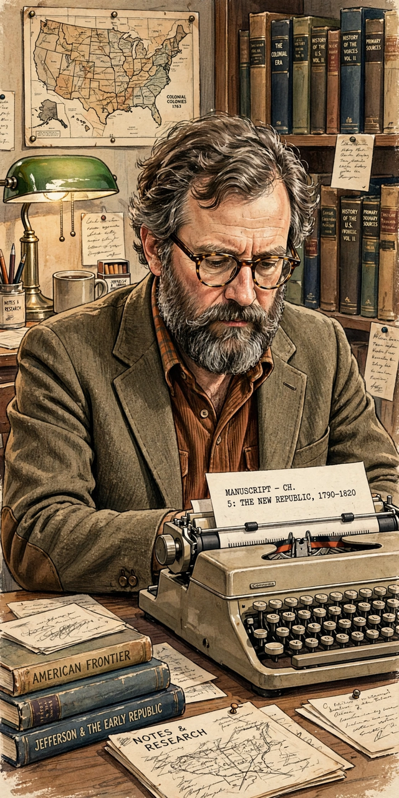

| Theodore Roszak | |
| Born | November 15, 1933, Chicago, Illinois, U.S. |
|---|---|
| Died | July 5, 2011 (aged 77), Berkeley, California, U.S. |
| Occupation | Historian, novelist, cultural critic |
| Known for | Coining "counterculture"; The Making of a Counter Culture (1969); ecopsychology |
| Institutions | California State University, East Bay |
Theodore Roszak (November 15, 1933 – July 5, 2011) was an American historian, novelist, and cultural critic best known for his 1969 book The Making of a Counter Culture, which popularized the word "counterculture" and became a defining analysis of the 1960s youth movement.
Roszak studied at UCLA and Columbia University, where he earned his PhD, and taught for decades at California State University, East Bay. His early work addressed contemporary politics and the Cold War; with The Making of a Counter Culture he turned to analyzing the technocracy — the alliance of science, industry, and state expertise — and the young rebels, from hippies to student radicals, resisting it, drawing sympathetically on figures such as Herbert Marcuse, Norman O. Brown, and Alan Watts.
Roszak went on to write Where the Wasteland Ends (1972), Person/Planet (1978), and The Voice of the Earth (1992), which helped found the field of ecopsychology — the study of the psychological bond between humans and the natural world. He criticized the computer revolution in The Cult of Information (1986) while also writing novels, including the cult conspiracy thriller Flicker (1991) and The Devil and Daniel Silverman (2003). His work connected the 1960s counterculture to the environmental movement and to figures like Timothy Leary, whom he treated as both symptom and prophet of the era.